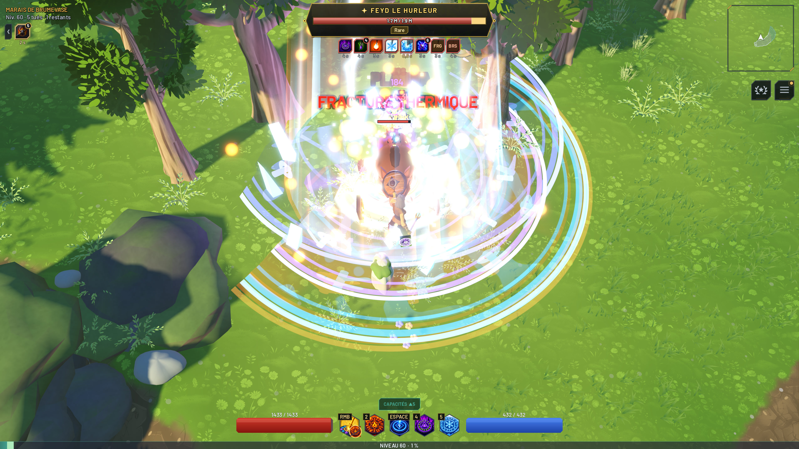
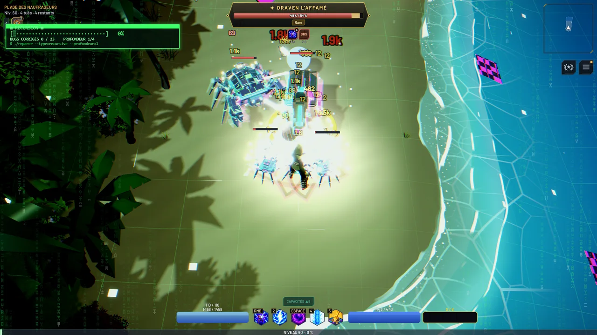

The Runecarver, leagues and the Castle
The Runecarver, space invasions, glitched rifts and the Blood Castle as act II.
A ninth class, two leagues (space invasions and glitched rifts), the Blood Castle as act II, a battle pass, controller support and some thirty new skills. Have fun!
The Runecarver
Ninth class: Runic Carving carves the runes of your four slots into the ground, one after another. Two overlapping glyphs of different elements react — Thermal Fracture, Plasma, Superconduction… — and Word of Rupture detonates them all.

Space league
Black holes open on maps and spit out aliens. Closing them yields energy cells: the refuge's astronaut trades them for expeditions to ten planets to conquer, all the way to the Star Devourer.

Glitched rifts
Corrupted maps full of bugs, four kinds of rifts, glitched items with an exclusive affix, and the Corrupted Core at the bottom of the recursive rift.

The Blood Castle
The Castle becomes act II, with its four guardians: the Headsman of the Gaols, the Scarlet Countess, Sir Morvan and the Guardian of the Nave. The Castle Grounds lead the way under a blood moon.

Patch notes
New class: the Runecarver
- Runic Carving: carves the runes of your 4 slots in turn (unlocked at levels 1, 6, 14 and 24, chosen in the Class tab). At most 4 glyphs at once.
- Runes of Embers (fire), Frost (cold), Thunder (lightning) and Withering (erosion, formerly the Curse of Withering).
- Reactions: two overlapping glyphs of different elements react — Thermal Fracture, Plasma, Superconduction, Black Flame, Frozen Necrosis, Void Arc.
- Word of Rupture: detonates every glyph; all pairs react, with no cooldown.
- Resonance (level 5): +40% reaction damage. A 12-node class tree (Catalysis, Cascade, Living Rune, Confluence…).
- Engraved stones orbit the hero: the largest one is the next rune.
- Rune supports: Lasting Glyph, Unstable Glyph, Twin Rune.
- Legendaries: Chalk of the First Carver, Gauntlets of the Wandering Seal, Crown of the Four Seals, Ring of the Runic Round, Staff of the Great Cycle, Lexicon of Silence.
New skills
- 8 guards, instant, without interrupting your action: Shield Overcharge, Unshakeable Guard, Mist Step, Stoneskin, Shield Wall, Aegis of Flames, of Frost and of the Storm.
- 7 area curses (one per enemy): Flames, Frost, Storm, Void, Torment, Fragility, Shattering. Cursed Aura support: the curse becomes an area around you.
- Empowerments (8 s, +10% to skills of their type): Martial Fervour (+2% per nearby enemy), Arcane Seal (blood price: life lost, damage gained), Creeping Blight (a spore that Gnaws at enemies). Convocation becomes an empowerment: minions recalled to the cursor.
- Gangrenous Strike (melee, stacking Gangrene).
Plaguebearer and erosion
- Class rewritten around erosion: starts with Contagion, Virulence that rises with afflicted enemies, Epidemic at 100.
- Contagion: a spore cloud that leaps to 2 enemies when its carrier dies (at most 4 leaps), with no loss of damage.
- Grasp: a channel, erosion links on several enemies that leap on death.
- Scythe of Reaping: Reap deals several seconds of all the target's damage over time at once.
- Poison is gone: it becomes hit erosion (Serpent Fang; Venom renamed Corrosion for the Ranger).
- Erosion spells deal real erosion hits, never reduced by elemental resistances. Black Hole switches to erosion.
- Curse of Withering: 1 Wither per second unconditionally, erosion +75%.
- Supports: Concentrated Virulence, Slow Agony, Reaper, Spread, Growing Rot, Withering.
- Legendaries: Gauntlets of the Bloom, Gleaner's Ring, Crown of Rats, Plague Sower, Shroud of Eternal Rot, Scythe of the Last Hour.
Talents
- New god trees: Lord of Minions (all minions), Master of Afflictions, Reaper of Plagues, Lord of Entropy.
- Master of Legions refocused on Bone minions, nodes renamed.
- Goddess of Knowledge: new major talents (Refrain, Arcane Cycle, Inverted Hourglass, Anchored Runes, Wheel of Elements, Full Flow). A character who had the old choice keeps the new one of the same rank.
- God choice reorganised into 5 paths, with a card for each tree.
- Class tree: right-click to unlearn a node (if nothing depends on it).
Skills: general pass
- Distances and areas finally shown correctly (the old calculation made them 1.7 times too short); some fifty descriptions corrected.
- Tooltips: real damage per hit, ranges, rates, channelling cost per second, real minion life and damage, real aura values.
- Army of Bone: one skeleton per cast, up to 4 (levels 1, 9, 17, 25), sturdier early on.
- Elemental totems redesigned (pillars and gems), white-blue lightning everywhere, physical arrows in hot steel, a less blinding Frost Nova, a scorch of embers where the Fireball lands.
- The totems' “Radiance” support renamed Radiant Totem.
- Supports removed where they had no effect: Impulse without a cooldown, Crescendo on minions, Unstable Minions on Will-o'-wisps, Bounce on falling projectiles and the Lightning Orb…
Space league
- Invasions: a black hole can open in the Wandering Lands (22%) and in the campaign from the 4th zone (20%). It spits out aliens from three families (Voracious Swarm, Crystallines, Void Abyssals) and implodes once the rift is emptied, dropping all the loot at once.
- Closing an invasion yields energy cells (2 in the Wandering Lands, 1 in the campaign). The first one brings the astronaut to his island at the refuge.
- Expedition (at the astronaut's): a crossing of asteroids, 1 cell per jump, up to a planet to conquer. Asteroids empower aliens and loot; encounters with choices (wreck, signal, anomaly, star shower).
- 10 planets, each with a permanent bonus that grows with its stars. Solar system: 3 orbits, alignments and family synergies.
- The Black Star: 3 fragments open the map of the Star Devourer (three rifts then the Great Rift, 3 lives). Exclusive legendaries: Devourer's Crown, Event Horizon, Ring of the Dead Star.
- Events on 10% of maps: meteor shower, supply drop, gravitational anomaly, golden alien.
- New monsters: Voracious, Spine Spitter, Brood Crusher, Quartz Mite, Prismatic Mantis, Lumen Thrower, Void Crawler, Wandering Eye, Abyssal Maw; bosses the Brood Queen, the Quartz Tyrant, the Herald of the Void.
Glitch league
- Glitched rifts: 24% of Wandering Lands maps, 16% in the campaign from the 3rd zone. Enter with the interact key: the map “un-renders” itself and fills with bugs to fix.
- 4 types: glitched, critical (much stronger bugs), volatile (70 s), recursive (4 depths, then the Corrupted Core).
- Bugs: Stray Byte, Stack Worm, Corruptor, Trojan Horse, Memory Leak.
- Glitched items: one extra exclusive affix (Duplication, Null Pointer, Infinite Loop, Ghost Copy…). The forge cannot modify them.
- Core legendaries, stronger with every glitched item you wear: Heart of the Core, Kernel Panic Mask, Null Pointer Blade.
- The Scientist settles on the refuge's laboratory island: rift log, known affixes.
- Tree of the Lands: 7 glitch nodes (Corrupted Packet, Recursion, Fatal Error…).
Campaign and maps
- New order: act I (Forest Edge → Path of Bones → Catacombs → Marsh → Grounds), act II = the Blood Castle (Flooded Gaols, Great Halls, Apartments Wing, Nave of Blood, Rampart Walk, lv. 9–15), act VII = the desert (lv. 49–55). Old saves keep their finished maps.
- Brumevase Marsh remade: walkways over the water, mist, fireflies, frogs, herons; the start at the foot of the burrow's mound; 108 monsters.
- Blood Castle Grounds (new): an avenue, a fountain, a family cemetery, moats, a drawbridge, a breach into the gaols; rain, lightning, a blood moon that reddens as you approach. Guardian: the Crypt Beast.
- Rotating camera in some zones (the Grounds), without ever changing the hero's direction; the minimap rotates with the camera (N marker).
- Catacombs: torches with real flames, carved sarcophagi, translucent webs, more monsters; the exit through the mouth of the burrow onto a wooded meadow.
- The Forest Edge: no more seaweed or tide pools, bark and driftwood remade, a lighter clearing around the hero (better performance).
- Sound ambiences specific to each room of the Castle, to the Marsh and to the Grounds. Footsteps depend on the ground.
Guardians and monsters
- New Castle guardians: The Headsman of the Gaols, The Scarlet Countess, Sir Morvan, Champion of Blood, The Guardian of the Nave.
- Castle monsters rebalanced; the Blood Count much faster and less tough.
- Grumm, the Gravedigger, the Lord of the Ossuaries: richer models, entrances, a second phase at 50% with rage and new attacks.
- Lord of the Ossuaries: a wide reap and a backhand, a spectral glide, −10% life.
- Campaign guardian life less exponential (−10% at level 6, −43% at level 30). Zig-Zag, Great Goblin Oracle, less dangerous in the campaign.
Story
- Rattles, a chatty flying skull, follows you from the end of the Forest Edge to the refuge.
- The Count's belongings reveal the flight of the ashen silhouette and a sea chart.
- Voiced dialogue for the characters (Scientist, Astronaut, Merchant, Rattles…).
Death and the Wandering Lands
- Checkpoints: you get back up at one third, two thirds or just before the guardian, as well as at the start of the map.
- Death screen: Get up, Restart or Return to the refuge (the map stays open, RETURN portal).
- Wandering Lands: 6 lives per map.
- Detailed death screen: the last 10 hits, their source and the calculation (armour, talents, shields).
Refuge
- The refuge grows with you: camp, workshop, map pavilion, stone circle.
- The astronaut's island and the laboratory island, linked by bridges once unlocked.
- A more compact merchant.
Battle pass and cosmetics
- A free battle pass (J key): 61 challenges, 8 ranks from Recruit to Myth. Account-wide progress, challenges already met are counted as soon as it opens.
- Cosmetics (pass points, no gameplay effect): 5 portals, 5 footstep trails, 5 pets (crab, frog, bat, swallow, will-o'-wisp), 4 title screen themes (Embers, Ashes, Cosmos, Glitch).
Interface
- Tutorial: first talent, the Forest Edge chest (mana elixir), a support given by the first guardian, the class awakening. Can be turned off (Options → Game → Game hints).
- A single interaction prompt at the bottom of the screen, with the real key.
- New target and boss frames (affixes, ailments, ticks), a collapsible active effects bar.
- Central announcements remade; simultaneous unlocks grouped together.
- F3: performance card (hidden, compact, detailed).
- Skill level-up: ▲ button, a panel above the key.
- Loot filter in 3 screens, several named filters, a preview in a real clearing.
- Character selection: class, progress, play time, drag-and-drop order. Key layout choice (ZQSD, WASD, mouse) at creation.
- Sharper fonts at every resolution.
- Steady loading, with no stall at 80%.
Options and controller
- Options → Display rewritten: window mode, screen choice, Low to Ultra presets, hover help; fullscreen at native resolution.
- Controller and Steam Deck: assisted stick aiming, a virtual cursor in menus, A/R1… labels, settings adapted on first launch, help in Options → Controls.
Updates
- More reliable automatic updates: no more restart loop, file size and checksum verified, an
update.logjournal. - Downloads on a new server, with nothing to change on your side.
Fixes
- Shattering Leap: Trail of Fire, Momentum and Great Momentum work.
- Shockwave: also works on Rush, Lunge, Shadow Leap and Whirlwind.
- Elemental totems and Black Hole: the damage area matches the circle shown (85% before).
- Burning Totem + Frenzied Totem: the burn ticks faster. Lightning Totem + Bounce: bounces count. Ice Totem: projectile speed applies.
- Frost Arrow: shard speed counted only once. Sparks + All Around: spread over 360°.
- Lightning Orb: text corrected (one discharge every 0.5 s). Rain of Arrows: displayed effectiveness is exact.
- Spell Totem, Convocation and the Incendiary Arrow's trail placed at the real ground height.
- Grasp: the damage arrives with the beam.
- Ground effects (erosion, seals, fire) follow the terrain instead of being cut by slopes.
- Catacombs: the hero no longer rises out of the ground at the start; candles and mushrooms without a floating base; the Lord of the Ossuaries' scythe the right way up; no more black pit at the exit.
- Grounds: the dead hedges no longer float.
- The Forest Edge: no more trees planted in the sand.
- Refuge: foam around the pier posts re-centred, the boat's foam during the intro.
- Rain follows the camera rotation; butterflies visible from above.
- Death screen without the superfluous “Enter” hint; theme previews no longer stretched.
- Sharp fullscreen: rendering followed the saved window size instead of the screen resolution.